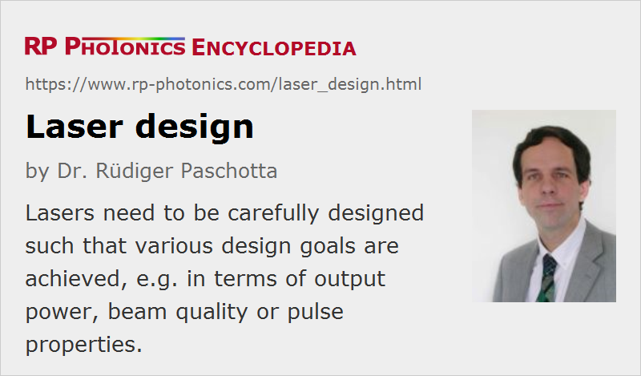

Laser Design
Definition: the design of a laser device, or the process of working out such a design
German: Laserdesign
How to cite the article; suggest additional literature
Author: Dr. Rüdiger Paschotta
The term design can have two different meanings. In some cases, it is meant to be a detailed description of a device, including e.g. used parts, how they are put together, and important operation parameters. In other cases, the term denotes the process leading to such a description. This article discusses some important aspects for the design of laser devices, such as diode-pumped solid-state lasers, or similar devices such as optical parametric oscillators. A separate article on laser development gives additional information.
Defining the Design Goals
Before a design is made, the design goals must be carefully evaluated. These should include not only the central performance parameters such as output power and wavelength; many more details can be relevant:
- optimum performance, e.g. in terms of output power, power efficiency, beam quality, brightness, intensity and/or phase noise, long-term stability (e.g. of the output power or the optical frequency), timing jitter, etc.
- compact and convenient setup, ease of operation (e.g. simple turn-on procedure, simple wavelength tuning, no need for realignment)
- maximum flexibility (e.g. for changing operation parameters)
- reliability, low maintenance requirements, simple and cost-effective error analysis, maintenance and repair
- minimum sensitivity to vibrations, temperature changes, electromagnetic interference, aging of components
- low production cost, i.e., a small number of parts, simple alignment and testing, avoiding the use of parts which are expensive, sensitive, or difficult to obtain
It is certainly advisable to work out carefully the list of these requirements for the particular case before investing any significant resources in laser development, because it can easily be much more expensive and time-consuming to introduce additional properties into an already existing device.
Important Aspects of Laser Designs
The properties of the designed laser device are largely determined by the design details, not only by the parts used. Some aspects are particularly important:
- general design parameters, such as resonator length (influencing compactness, tuning issues, frequency stability, etc.), pump intensity
- selection of gain medium (e.g. a laser crystal) and pump source, suitable choice of geometry (e.g. rod or thin disk, side pumping or end pumping), doping concentration, crystal length, etc.
- pump setup (e.g. for diode-pumped lasers), influencing output power and beam quality, long-term stability, and the ease of exchanging pump diodes
- optimum type of laser resonator (e.g. as linear or ring laser, with monolithic or with discrete elements) and optimized resonator design, influencing aspects such as the number of parts, the output power and beam quality, alignment tolerances, sensitivity to thermal lensing, mechanical stability and drifts
- selection and placement of laser mirrors and intracavity components for wavelength tuning, generation of short pulses via mode locking, dispersion compensation, frequency stabilization, etc.
- mechanical housing, influencing mechanical stability, efficiency of cooling, temperature drifts, ease of maintenance, and safety issues
- electronic equipment, e.g. for stabilizing the output power, controlling the laser wavelength, monitoring the status of pump diodes or temperatures, ensuring safe operation
- proper documentation, including a part list (possibly with suppliers), mechanical designs, alignment and testing procedures, design ideas, possibly optional extensions and limitations for modifying operation parameters
This list, which is certainly not yet complete, shows that proper laser designs are not a trivial matter, but are essential for achieving full customer satisfaction, cost efficiency, and flexibility for future developments.
What is Needed for Designing Lasers
Designing a laser is a challenging task. The following are definitely required:
- a detailed understanding of the requirements, which may include some understanding of the application
- a detailed understanding of all the relevant physical effects, such as laser amplification, thermal lensing, resonator modes, laser noise, etc., and their interaction
- the essential data, e.g. of laser crystals
- the ability to reduce the complexity to a practical level without losing important details
- flexible software for calculations and simulations
- practical experience with lasers, enabling one to recognize typical problems, correctly interpret experimental observations, etc.
It is clear that software alone is by no means sufficient to work out good laser designs.
Role of a Design in a Development Project
It is common practice, but nevertheless generally not advisable, to consider a laser design as a result of a development process which is largely based on trial and error. The design then plays a minor role, just summarizing the results of a lengthy process. In such cases, the design is often not even properly documented, which creates a risk of losing a lot of potentially valuable information while saving only a minor amount of time at the moment.
In any non-trivial design project – and laser design projects are hardly ever trivial – it is very advisable to attribute a vital role to the laser design:
- The laser design is made in the office, not in the laboratory, and properly deals with all known issues which can be or become relevant. Although this process can be much faster and cheaper than a trial-and-error approach in the lab, it takes some considerable discipline and of course requires a comprehensive expertise.
- A proper design is not just a set of ideas, but a very specific description, including e.g. the list of required parts, a more or less detailed prescription on how to put them together wherever this is not trivial, and is ideally supplemented by a description of the underlying reasoning, a discussion of limitations, etc.
- The prototype is then fabricated according to the design, and not vice versa. This greatly speeds up the fabrication, thus making efficient use of costly laboratory resources.
- For any future development of similar kind, the carefully worked out design will be a very valuable input. If it does not exist, and particularly if in addition a vital person has left the company, future developments will be much less efficient.
Attempts to abbreviate this process carry the risk of obtaining reduced performance values and of large time delays due to unexpected technical problems. The later such problems are recognized, understood and solved, the larger can be the resulting damage.
Deriving Designs from Older Designs
In industrial development, it is common to derive some product design from an older design, rather than starting from scratch. Although this appears very economical, there are significant risks, particularly in cases where the first design has not be properly worked out and documented in a process as described above. A central challenge is that modifying some detail of a laser design may easily have unexpected side effects, introducing new problems which then require additional measures, which again can have side effects.
For such reasons, starting with some initial design, which works e.g. with some lower than desired output power, can be helpful, but it still requires a detailed understanding of that design and its limitations. A proper design document for the initial design can make it easy to produce a whole family of designs, which differ in e.g. output power or pulse repetition rate.
Design Reviews
Under certain circumstances, it may be appropriate to make a review of an existing laser design. This can be the case, for example, when significant problems have occurred, or when the demands have increased and might be met with a revised design, rather than with a completely new one. If a properly documented design does not yet exist, it is high time to do this job; this process may already deliver important hints concerning what to improve.
Suppliers
The RP Photonics Buyer's Guide contains 2 suppliers for laser design software.
Questions and Comments from Users
Here you can submit questions and comments. As far as they get accepted by the author, they will appear above this paragraph together with the author’s answer. The author will decide on acceptance based on certain criteria. Essentially, the issue must be of sufficiently broad interest.
Please do not enter personal data here; we would otherwise delete it soon. (See also our privacy declaration.) If you wish to receive personal feedback or consultancy from the author, please contact him e.g. via e-mail.
By submitting the information, you give your consent to the potential publication of your inputs on our website according to our rules. (If you later retract your consent, we will delete those inputs.) As your inputs are first reviewed by the author, they may be published with some delay.
See also: resonator design, lasers, laser development, laser modeling, brightness, power scaling of lasers, alignment sensitivity of optical resonators, The Photonics Spotlight 2006-07-05
and other articles in the categories lasers, methods

This encyclopedia is authored by Dr. Rüdiger Paschotta, the founder and executive of RP Photonics Consulting GmbH. How about a tailored training course from this distinguished expert at your location? Contact RP Photonics to find out how his technical consulting services (e.g. product designs, problem solving, independent evaluations, training) and software could become very valuable for your business!
|  |
If you like this page, please share the link with your friends and colleagues, e.g. via social media:
These sharing buttons are implemented in a privacy-friendly way!